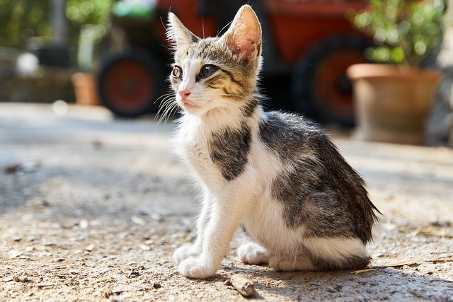
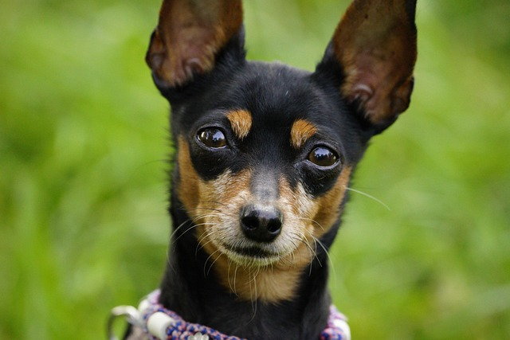

Firulais
Perro • 3 años • Mestizo
Conecta con refugios y rescatistas para darle un hogar a una mascota que lo necesita.
Explora algunas de las mascotas que esperan por una familia.
Perro • 3 años • Mestizo

Gato • 2 años • Criolla

Perro • 1 año • Mediano
Gata • 4 años • Tricolor
Te acompañamos en cada paso para que la adopción sea responsable y segura.
Revisa el catálogo de mascotas y encuentra la que mejor se adapte a tu estilo de vida.
Envíanos tus datos y nos comunicaremos contigo para orientarte en el proceso.
Conoce a tu futura mascota, firma el compromiso de adopción y comienza una nueva historia.
Personas que decidieron adoptar con amor.
“Adoptar a Luna fue la mejor decisión. El proceso fue claro, rápido y muy humano.”
“Me guiaron en todo momento. Hoy Rocky es parte de la familia.”
Ve a nuestra página de contacto y cuéntanos sobre ti.
📧 correo: contacto@adoptaconamor.org
📱 WhatsApp: +57 317 362 0873
📍 Ciudad: Medellín, Colombia
Proyecto académico basado en el Proceso Personal de Software (PSP).
Ir al formulario de contacto